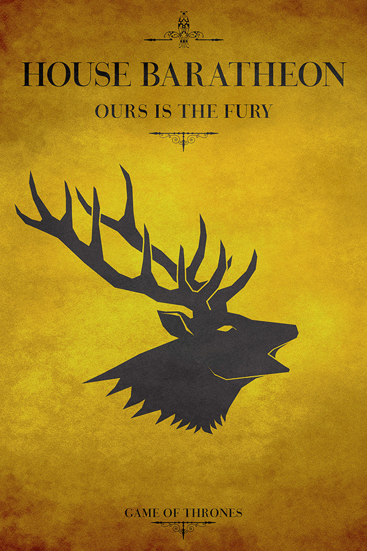
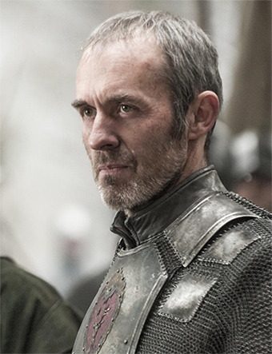

House Baratheon
House Baratheon of Storm's End is a legally extinct Great House of Westeros. Its main branch was formerly the royal house, but House Lannister now controls the throne. House Baratheon's sigil is a black stag on a gold background and their house motto is "Ours is the Fury". When Robert ascended to the Iron Throne, a gold crown was added to the stag, denoting their status as the royal house.
The ancestral Baratheon stronghold is Storm's End, but since becoming the royal house, they have also taken possession of the old Targaryen island fortress of Dragonstone, while the King rules from the city of King's Landing, the capital of the Seven Kingdoms.
When the War of the Five Kings began following King Robert Baratheon's death, House Baratheon became divided into three distinct factions: one led by Robert's alleged son (who is actually the product of an incestuous relationship between Queen Cersei and Ser Jaime Lannister), Joffrey; one led by his younger brother, Stannis; and one led by his youngest brother, Renly. As a result of Renly's murder and the casualties suffered at the Battle of the Blackwater, the majority of House Baratheon's surviving lords and bannermen are now sworn to Stannis, though much of the Stormlands are occupied by Lannister and Tyrell forces loyal to King Tommen Baratheon, Joffrey's younger brother and successor.
With Tommen's death, House Baratheon has become legally extinct. The only remaining known member of the Baratheon bloodline is Gendry, King Robert's unacknowledged bastard son.

The Baratheon sigil is a black crowned stag, on a gold field.The Baratheon's words are "Ours is the Fury".
House Baratheon was founded by Orys Baratheon, a general in the army of King Aegon I Targaryen, the Conqueror. Orys Baratheon was also rumored to be Aegon's bastard half-brother. He defeated Argilac the Arrogant, the last of the Storm Kings, and captured his castle of Storm's End. For his accomplishments, Orys was made Lord of Storm's End and founder of House Baratheon. Orys took the sigil and words of the defeated House Durrandon as his own. He also took Argilac's daughter, as his wife.
Stannis Baratheon
